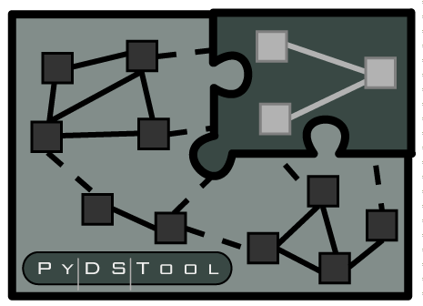

PyDSTool
PyDSTool (Python Dynamical Systems Tool) is a software package whose development I have led since its inception in 2004/5, while I was a post-doc at Cornell University under the mentorship of Prof. John Guckenheimer.
With the invaluable contribution of Erik Sherwood (now at Utah) and Drew LaMar (now at William and Mary), we wrote a basic package that could numerically solve a variety of dynamical system types (although not PDEs!), and perform various kinds of analysis. Since then, the package has somewhat matured and established itself in the applied math / computational biology communities. Further history and development notes can be found here.
The main project website has been newly refurbished for 2012.
Here are the slides from a recent presentation I gave at Georgia Tech about scientific computing with Python and PyDSTool.
I also belong to the Neural Ensemble online community, which focuses on python software tools for neuroscience.